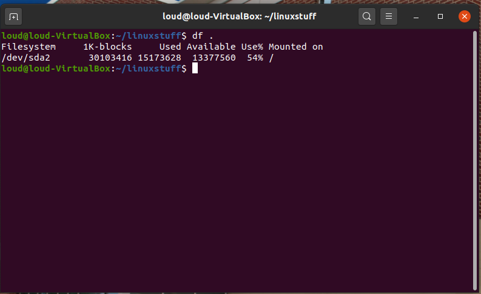
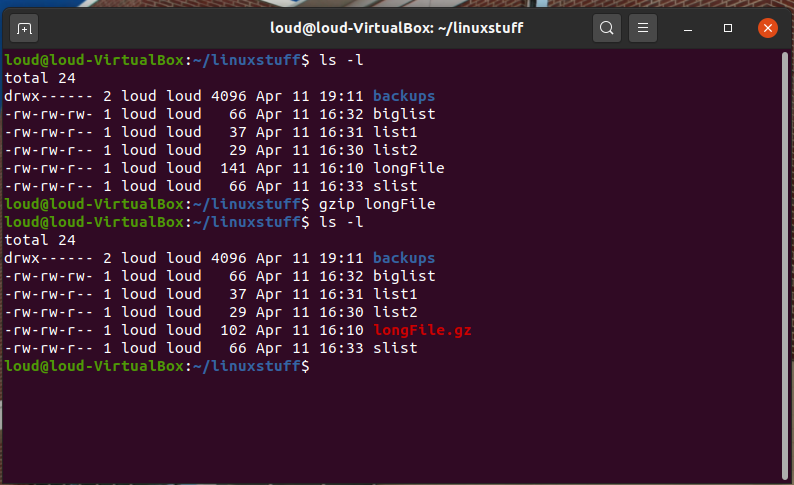
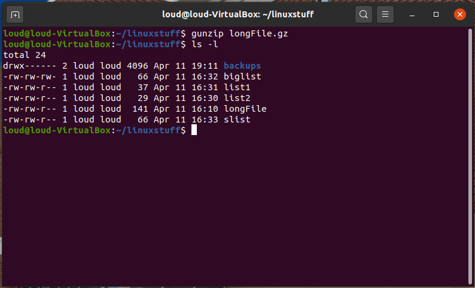
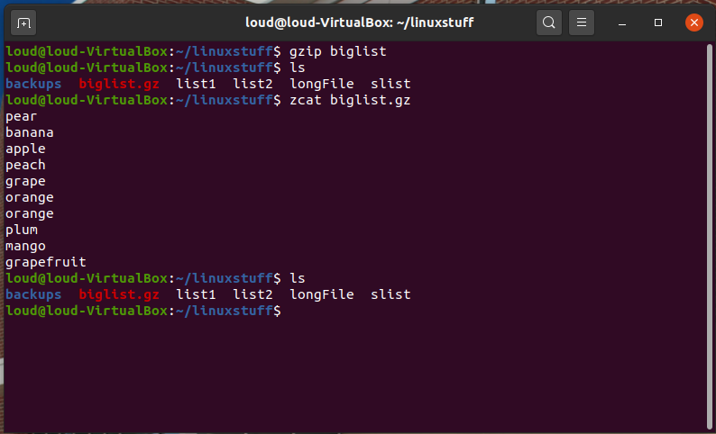
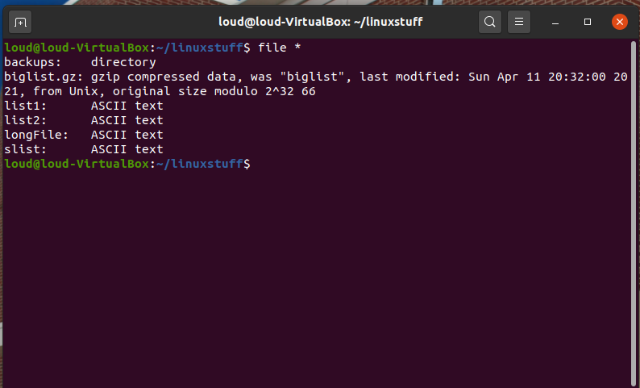
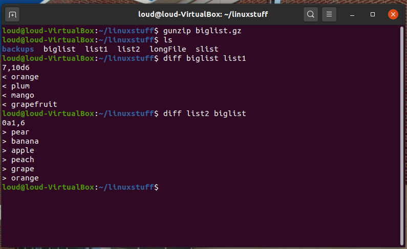
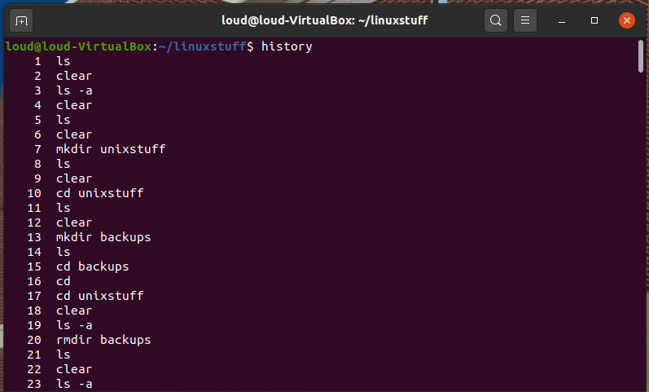
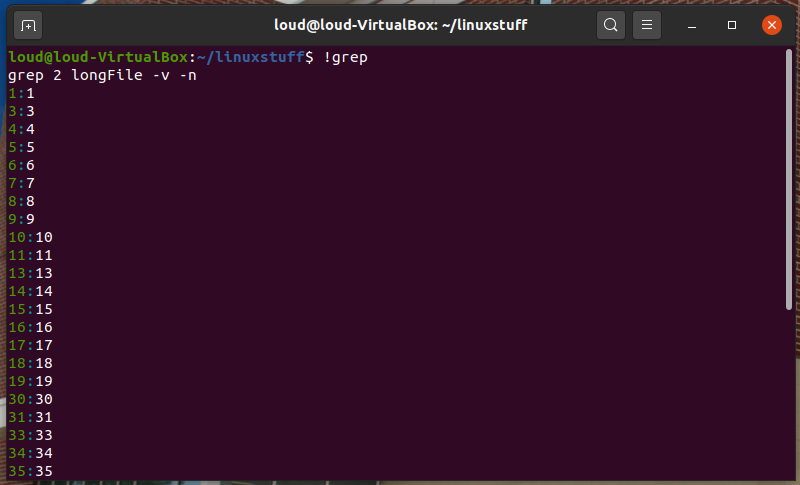

The df command reports on the space left on the file system. For example, to find out how much space is left on the fileserver, type
$ df .

This reduces the size of a file, thus freeing valuable disk space. For example, type
$ ls -l longFile
and note the size of the file using ls -l . Then to compress longFile, type
$ gzip longFile
This will compress the file and place it in a file called longFile.gz
To see the change in size, type ls -l again.

To expand the file, use the gunzip command.
$ gunzip longFile.gz

zcat will read gzipped files without needing to uncompress them first.
$ zcat biglist.gz
If the text scrolls too fast for you, pipe the output though less .
% zcat biglist.gz | less

file classifies the named files according to the type of data they contain, for example ascii (text), pictures, compressed data, etc.. To report on all files in your home directory, type
$ file *

This command compares the contents of two files and displays the differences. Suppose you have a file called file1 and you edit some part of it and save it as file2. To see the differences type
$ diff file1 file2
Lines beginning with a < denotes file1, while lines beginning with a > denotes file2.

The C shell keeps an ordered list of all the commands that you have entered. Each command is given a number according to the order it was entered.
$ history (show command history list)

If you are using the C shell, you can use the exclamation character (!) to recall commands easily.
$ !! (recall last command)
$ !-3 (recall third most recent command)
$ !5 (recall 5th command in list)
$ !grep (recall last command starting with grep)

You can increase the size of the history buffer by typing
$ set history=100
Modified from original site made by M.Stonebank@surrey.ac.uk, © 9th October 2000